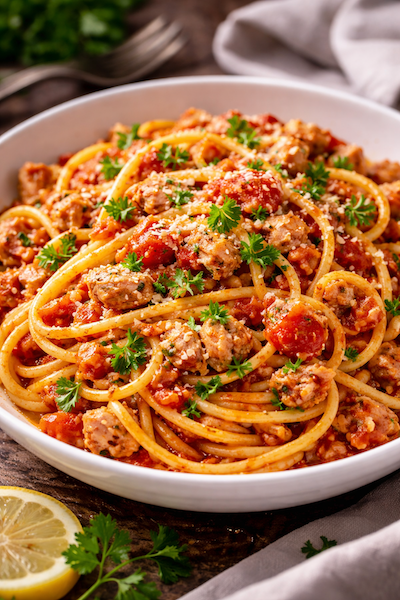

Pourquoi tu vas adorer ces pâtes au thon
- ✅ Prêtes en 15 minutes chrono
- ✅ Ingrédients du placard (thon + tomate)
- ✅ Recette rapide pas chère (parfaite fin de mois)
- ✅ Délicieuse avec penne, spaghetti ou fusilli
Ingrédients (2 personnes)
Nombre de personnes :
2 personnes
Les quantités s’ajustent automatiquement.
Optionnel : piment, câpres, olives, basilic frais, un trait de citron.
Préparation (rapide et facile)
- Fais bouillir l’eau salée pour les pâtes et lance la cuisson (temps indiqué sur
le paquet).
- Prépare la sauce : dans une poêle, chauffe l’huile d’olive, puis ajoute l’ail
haché 30 secondes.
- Ajoute la tomate : verse les tomates concassées, origan, sel/poivre. Laisse
mijoter 5 minutes.
- Ajoute le thon : égoutte-le (ou garde un peu d’huile si tu aimes), émiette et
mélange 2 minutes.
- Égoutte les pâtes en gardant un peu d’eau de cuisson.
- Mélange pâtes + sauce : ajoute 1–2 c. à soupe d’eau de cuisson pour une sauce
plus nappante.
- Serre chaud avec parmesan et basilic si tu en as.
Astuces pour une sauce encore meilleure
- 💧 Eau de cuisson = secret des pâtes : ça lie la sauce.
- 🌶️ Ajoute une pincée de piment si tu aimes.
- 🍋 Un trait de citron à la fin réveille le thon.
- 🫒 Version méditerranéenne : olives + câpres.
Variantes (selon ce que tu as)
- Pâtes thon crème : ajoute 2 c. à soupe de crème en fin de cuisson.
- Pâtes thon tomate épicées : piment + paprika fumé.
- Pâtes thon citron : zeste + jus de citron + persil.
- Version “légumes” : ajoute courgette râpée ou épinards (ça cuit vite).
Avec quoi servir ?
- 🥗 Une salade verte (vinaigrette simple)
- 🍅 Tomates + mozzarella si tu veux du frais
- 🥖 Un petit bout de pain (pour la sauce)
FAQ – Pâtes au thon express
Quel thon choisir ?
Thon au naturel si tu veux léger, thon à l’huile si tu veux plus gourmand. Les deux marchent très
bien.
Peut-on faire cette recette sans tomate ?
Oui : remplace par un peu de crème + citron, ou une sauce ail-huile avec thon émietté.
Comment éviter que ce soit sec ?
Ajoute un peu d’eau de cuisson des pâtes au moment de mélanger, et ne laisse pas trop réduire la
sauce.
Ça se conserve ?
Oui, 24–48h au frigo. Réchauffe à la poêle avec une cuillère d’eau.
À lire aussi (recettes rapides)
👉 Pour continuer :
Recettes rapides
faciles,
Penne al pomodoro,
Pâtes saumon crème
citron.